Feynman Parameters¶
When integrating a denominator like 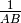, the idea is to introduce auxiliary parameters in order to make the denominator simpler. We start with the identity:
(1)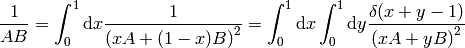
which can be proven easily:
>>> var("A B")
(A, B)
>>> integrate(1/(x*A + (1-x)*B)**2, (x, 0, 1))
1/(A*B - A**2) - 1/(-A*B + B**2)
>>> simplify(_)
1/(A*B)
By repeatedly differentiating with respect to B:
(2)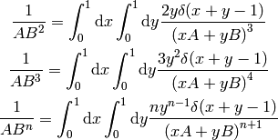
Then we prove:
(3)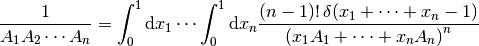
For 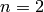 we get (1) and if it holds for  it also holds for
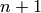, because we multiply (3) by 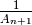 and get:
it also holds for
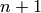, because we multiply (3) by 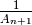 and get:
![{1\over A_1A_2\cdots A_n}{1\over A_{n+1}} =
= \int_0^1 \d x_1\cdots\int_0^1 \d x_n (n-1)!\,\delta(x_1 + \cdots +x_n-1)
{1 \over \left(x_1A_1 + \cdots + x_nA_n\right)^n A_{n+1}} =
= \int_0^1 \d x_1\cdots\int_0^1 \d x_n (n-1)!\,\delta(x_1 + \cdots +x_n-1)
\int_0^1 \d x \int_0^1 \d y {n y^{n-1} \delta(x+y-1)
\over \left(xA_{n+1} +
y\left(x_1A_1 + \cdots + x_nA_n\right)\right)^{n+1}}
= \int_0^1 \d x_1\cdots\int_0^1 \d x_n
\int_0^1 \d y {n!\,\delta(x_1 + \cdots +x_n-1) y^{n-1}
\over \left((1-y)A_{n+1} +
y\left(x_1A_1 + \cdots + x_nA_n\right)\right)^{n+1}}=
= \int_0^{1\over y} \d x_1\cdots\int_0^{1\over y} \d x_n
\int_0^1 \d y {n!\,\delta(yx_1 + \cdots +yx_n-y) y^n
\over \left((1-y)A_{n+1} +
y\left(x_1A_1 + \cdots + x_nA_n\right)\right)^{n+1}}=
= \int_0^{1\over y} y\d x_1\cdots\int_0^{1\over y} y\d x_n
\int_0^1 \d y {n!\,\delta(yx_1 + \cdots +yx_n-y)
\over \left((1-y)A_{n+1} +
\left(yx_1A_1 + \cdots + yx_nA_n\right)\right)^{n+1}}=
= \int_0^1 \d z_1\cdots\int_0^1 \d z_n
\int_0^1 \d y {n!\,\delta(z_1 + \cdots +z_n-y)
\over \left((1-y)A_{n+1} +
\left(z_1A_1 + \cdots + z_nA_n\right)\right)^{n+1}}=
= -\int_0^1 \d z_1\cdots\int_0^1 \d z_n
\int_1^0 \d y' {n!\,\delta(z_1 + \cdots +z_n+y'-1)
\over \left(y'A_{n+1} +
\left(z_1A_1 + \cdots + z_nA_n\right)\right)^{n+1}}=
=
\int_0^1 \d x_1\cdots\int_0^1 \d x_{n+1} {n!\,
\delta(x_1 + \cdots + x_{n+1}-1)
\over \left(x_1A_1 + \cdots + x_{n+1}A_{n+1}\right)^{n+1}}](../../_images/math/cf70bb93f43f798bd83db65c66d857408addd8b2.png)
Where we used (2) and the fact, that 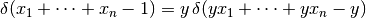, after the substituation we also
restricted the limits of integration from 1 to 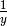, since  ,
,  ,
... are all positive.
,
... are all positive.